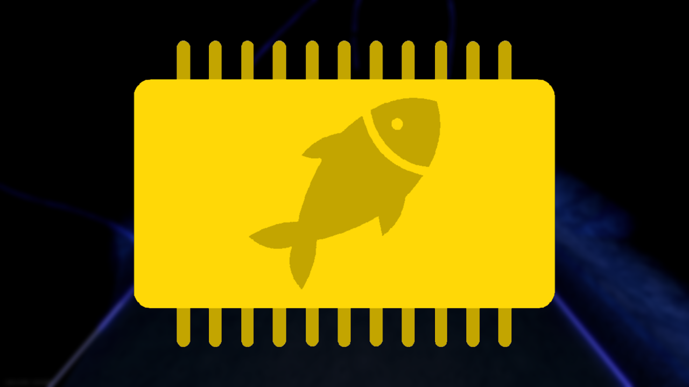

👀 PyWare Fishing – Intelligent, Universal, Full Automation
Download PyWare Fishing, an advanced Roblox fishing macro featuring full fishing automation and flexible rod support.
Super simple setup — download the macro, follow on-screen instructions, run it, and start fishing.
🔎 Fully transparent: The complete source code is available on GitHub for anyone who wants to review how it works.

ℹ️ What is PyWare Fishing?
PyWare Fishing is an advanced automation macro for Roblox Fisch,
designed to provide reliable, hands-free fishing with almost no setup.
🎯 Core Features Breakdown
🟢 Basic
The core of PyWare Fishing is a fully autonomous fishing system powered by computer vision and adaptive control algorithms.
⚙️ Automation
Designed for flexibility and scalability, the automation system adapts to different rods, games, and future updates.
🔧 Utilities
A powerful suite of automation tools designed to maximize efficiency and reliability across long sessions.